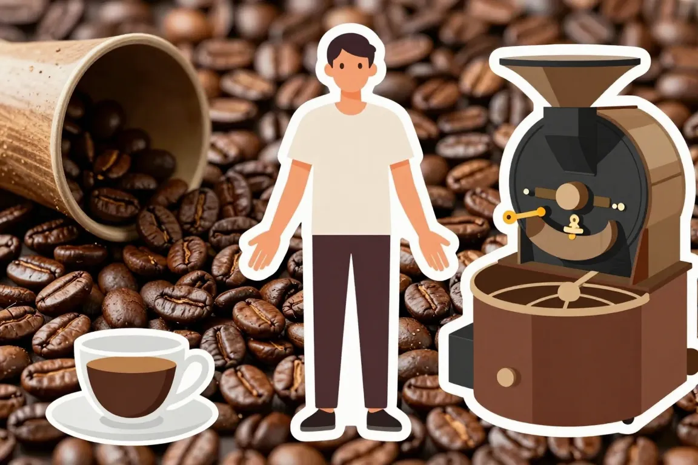

En hvit rutenettkollasj som lister gjenstandene, klærne og vanene til én type person rundt en utklipt figur. Den vokste ut av Tumblr og Twitter i 2014 og ble en alminnelig mal for identitetsspøker.

Kjerneidé
Beskriv en type person som et sett med ting du kan kjøpe, ha på deg og si.
Designprinsipper
Del et hvitt lerret på 600px x 750px i et 3 x 3-rutenett av produktutklipp med 12px rennesteiner.
Plasser en figur eller en navnelapp i den sentrale cellen og legg 5 til 8 gjenstandsfoto rundt den.
Klipp hver gjenstand ut med en ren kant på hvit bunn, uten skygge.
Legg til en fet tittel øverst: 'Type starter pack' i svart skrift på 40px.
Legg til en bildetekst på 14px under hver gjenstand, med stor forbokstav i setningen, med et merke eller en vane.
Hold gjenstandsstørrelsene innenfor 20 % av hverandre; figuren kan være 1,5 ganger større.
Bruk ren hvit bunn og la alle foto beholde sine egne farger.